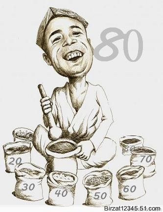

ئالدىنقى يازما
ئالدىنقى يازما كېيىنكى يازما
كېيىنكى يازما
80خالتا ھەققىدە-مەريەم ساقىم (تاغدىن-باغدىن)
ئاپتور:Birzat ۋاقتى:2009-07-02



شىنجاڭ تىببىي ئۇنىۋېرسىتېتى خىمىيە ئوقۇتۇش گۇرۇپپىسىدىن
مەريەم ساقىم
مەن 1990 - يىلدىن باشلاپ ئەنئەنىۋى تىبابەت ساھەسىدە ئىزدىنىشكە باشلىغانىدىم. ياپونىيە تىببىي پەنلەر ئۇنىۋېرسىتېتى دورىگەرلىك فاكۇلتېتىنىڭ، دورىلىق ئۆسۈملۈك - ياپونىيە ئەنئەنىۋى تىبابىتى تەتقىقات ئىشخانىسىدا ياپونىيە ئەنئەنىۋى تېبابىتى بىلەن ئۇچراشتىم ۋە دۇنياۋى ئۈچ چوڭ ئەنئەنىۋى تىبابەت سىستېمىسى سېلىشتۇرما تەتقىقات بىلىملىرى بويىچە ئىزدەندىم. بۇ ئۈچ چوڭ ئەنئەنىۋى تىبابەت سىستېمىسى:
1. جۇڭگو ئەنئەنىۋى تىبابىتى ،بۇ سىستېمىغا چاۋشەن، ياپونىيە ئەنئەنىۋى تىبابەتلىرى كىرىدۇ.
2. ھىندى ئەنئەنىۋى تىبابىتى بۇ زاڭزۇ، موڭغۇل تىبابەتلىرىنى ئۆز ئىچىگە ئالىدۇ.
3. گرېتسىيە تىبابىتى
بۇ تىبابەت ئوتتۇرا ئەسىردە ئەرەپ يېرىم ئارىلىغا تارقىلىپ ئىسلام مەدەنىيىتى سىستېمىسىدىكى يۇنان تىبابىتى بولۇپ شەكىللەنگەن. يۇنان قەدىمىي گرېتسىيىنىڭ مۇستەملىكىسى يىئونىيا (كىچىك ئاسىيا)نىڭ ئەرەبچە تەلەپپۇز قىلىنىشى. بۇ ئىسلام مەدەنىيىتى خۇرۇچلىرى ئارقىلىق تەرەققىي قىلغان تىبابەت سىستېمىسىدۇر.
بىزنىڭ ئۇيغۇر تىبابىتىمىز نەزەرىيىۋى ئاساسىي بىلىملىرىدىن قارىغاندا بۇ سىستېمىغا كىرىدۇ.
بۇ يەردە ياپونىيە ئەنئەنىۋى تىبابىتى ئۈستىدە قىسقىچە توختىلىپ ئۆتەي. خەنزۇ مىللىتى سىستېمىلىق داۋالاش ئۇسۇللىرى ئارقىلىق جۇڭگوچە تىبابەت ئىلمىنى بەرپا قىلدى. 5 - ئەسىرنىڭ دەسلەپكى يىللىرى جۇڭگو تىبابىتى چاۋشەن يېرىم ئارىلى ئارقىلىق ياپونىيىگە تارقالغان. ئېدو دەۋرى (1603-1867 - يىلغىچە)نىڭ دەسلىپىدە ئۆزلىرىنىڭ يەرلىك داۋالاش بىلىملىرى، تەجرىبە - ساۋاقلىرىنى جۇڭگو تىبابىتى بىلەن بىرلەشتۈرۈپ ئۆزگەرتىپ، لايىقلاشتۇرۇپ ياپونىيە ئەنئەنىۋى تىبابىتىنى بارلىققا كەلتۈرگەن. بۇنىڭ ئالدىدا ياپونىيىگە گوللاندىيە تىببىي ئىلمى (بۇ ئەينى چاغدىكى غەرب تىبابىتى) ئېقىپ كىرگەندە ياپونىيىلىكلەر بۇ تىبابەتنى لانپو دەپ ئاتىغان، ئۆزلىرىنىڭ ئەنئەنىۋى تىبابىتىگە كانپو دەپ ئىسىم قويغان. كانپو ياپونىيىنىڭ ئۆزىگە خاس يەرلىك تىبابىتىنىڭ نامى بولۇپ، مېيجى دەۋرى (1868 - 1912 - يىلىغىچە)دىن باشلاپ قوللىنىپ كېلىۋاتقان ئىسىمدۇر.
ئەمدى ئۇيغۇر تىبابىتى دېگەن سۆزگە كېلەيلى، بۇ ھازىر شىنجاڭ ئۇيغۇر ئاپتونۇم رايونىدا ياشاپ كېلىۋاتقان ئۇيغۇرلار ئۆزلىرىنىڭ ئەزەلدىن داۋاملاشتۇرۇپ كېلىۋاتقان ۋە نەزەرىيىۋى سىستېمىسىنى تۇرغۇزغان ئەنئەنىۋى داۋالاش ئىلمىگە قويغان ئىسىم. ئۇيغۇر تىبابىتى يۇقىرىقى ئەنئەنىۋى تىبابەتلەرگە ئوخشاش مىللىي خاسلىققا ئىگە يەرلىك داۋالاش، ساقلىقنى ساقلاش بىلىملىرىنىڭ جۇغلانمىسى، ئۇ تەبىئەت دۇنياسى ئالەمنىڭ قۇرۇلۇشىنىڭ ئاساسى بولغان تۆت چوڭ ماددا(ئوت، سۇ، ھاۋا، تۇپراق)نى تونۇشتىكى تەبىئەت پەلسەپىسى ئىدىيىسىدىن باشلانغان. تەبىئەت قانۇنىيەتلىرىنىڭ نىگىزى بولغان تۆت چوڭ ماددا بىلەن ئادەم بەدىنىنىڭ فىزىئولوگىيىلىك ئامىلى بولغان تۆت خىلت(قان، بەلغەم، سەۋدا، سەپرا)نەزەرىيىسى قاتارلىقلار ئۇيغۇر تىبابىتىنىڭ دىئاگنوز قويۇش، داۋالاش، كېسەللىكنىڭ ئالدىنى ئېلىش بىلىملىرىنىڭ ئاساسى. ئادەملەرنىڭ مەۋجۇتلۇقى، ياشاش ئۇسۇللىرى ھەمدە ئادەم بەدىنىنىڭ فىزىئولوگىيىلىك، پاتولوگىيىلىك ھادىسىلىرىنى كۆزىتىش ئارقىلىق ئەجداتلارنىڭ ئەقىل - پاراسىتىگە ۋارىسلىق قىلىنىپ ھازىرقى ئەنئەنىۋى ئۇيغۇر تىبابەت سىستېمىسى بەرپا قىلىنغان. ئۇيغۇر تىبابىتىنىڭ كېلىپ چىقىشى ۋە تەرەققىياتى ئەجداتلىرىمىز ياشاپ كەلگەن تەبىئىي ۋە ئىجتىمائىي مۇھىت، تارىخىي ئۆزگىرىشلەر، تۇرمۇش شارائىتى، مىللەتلەرنىڭ ئېتنىك قاتلىمى ۋە بۇ زېمىنغا كىرگەن خىلمۇ - خىل دىنلار ۋە ئۇلارغا باغلىنىشلىق مەدەنىيەت سىستېمىسى بىلەن چوڭقۇر مۇناسىۋەتلىك.
بۇ زېمىنغا ئەڭ دەسلەپتە زوروئاستىر دىنى كىرگەن. 4 - ئەسىردىن باشلاپ سوغدىلارنىڭ پائالىيىتى نەتىجىسىدە مانى دىنى تارقىلىپ، ئەينى چاغدا دۆلەت دىنى بولغان. بۇلارنىڭ تىبابىتىمىزگە قانداق تەسىر كۆرسەتكەنلىكى ۋە رول ئوينىغانلىقى توغرىسىدا مۇكەممەل ماتېرىيال بولمىسىمۇ، ئۇلارنىڭ تەسىرى بولۇپمۇ، شامان دىنىنىڭ تەسىرى چوڭ بولغان، بۇنىڭ ئىزنالىرى يېقىنغىچە ساقلىنىپ كەلمەكتە. ئىسلام دىنى ئومۇملاشقاندىن كېيىن، ئەرەب، پارسلار بىلەن بولغان سودا مۇناسىۋىتىنىڭ گۈللىنىشى مەدەنىيەت ئالماشتۇرۇشتا تۈرتكىلىك رول ئوينىدى. ئۆزئارا تەسىر كۆرسىتىش، سىڭىشىش، شاللىنىش ئارقىسىدا ئۇيغۇر ئەنئەنىۋى تىبابىتى مۇكەممەللىشىپ باردى ۋە بۈگۈنكى سىستېمىلاشقان تىبابەت بولۇپ مەيدانغا كەلدى. يەر يۈزىدە ھاياتلىق پەيدا بولغاندىن بېرى ئادەملەر ئۆمۈر مۇساپىسىنىڭ ئاخىرقى بېكىتى ئۆلۈمگە يەرتكىچە بولغان جەرياندا خىلمۇ - خىل كېسەللىكلەرگە قارشى تىنماي كۈرەش قىلىپ كەلدى. بۇ كۈرەشلەرنىڭ بىردىن بىر قورالى يىمەكلىك ماتېرىياللىرى ۋە دورىلىق ماتېرىياللار بولدى. دۇنيادا سان - ساناقسىز دورىلىق ماتېرىياللار، خام دورىلارنىڭ بارلىقىغا كىشىنىڭ ئەقلى لال بولىدۇ. ئىنسانلارنىڭ قانداق قىلىپ ئۇلارنى تاپقانلىقى، بايقىغانلىقى بىر تەرەپتىن قارىغاندا سىردەك يەنى مۆجىزىدەك بىلىنىدۇ، بەلكىم تەساددىپى بايقالغانلىرىمۇ ئاز بولمىسا كېرەك. مۇتلەق كۆپ قىسمى ئادەملەرنىڭ ئۈزلۈكسىز ئىزدىنىشى، تەجرىبىسى، ئەمەلىيەتتىن ئۆتكۈزىشى ۋە نۇرغۇن مەغلۇبىيەتلەردىن كېيىن قولغا كەلتۈرگەن نەتىجىلىرى ئارقىسىدا بايقالغان دېيىشكە بولىدۇ.ئىنسانلار دورىلىق ماتېرىياللارنى تەبىئەت دۇنياسىدىكى ئۆسۈملۈك، ھايۋانات ۋە مەدەنلەردىن ئالدى، بۇلارنىڭ ئىچىدە ئۆسۈملۈك دورىلارنىڭ رولىنىڭ تولىمۇ زور ئىكەنلىگىنى ئېيتىپ ئولتۇرۇشنىڭ زۆرۈريىتى يوق. دېمەك ئادەملەر تەبىئەت دۇنياسىدىن ئۆز ئەقىل - پاراسىتىگە تايىنىپ، يېمەك - ئىچمەك، كىيىم - كېچەك، ئولتۇراق شارائىت مەسىلىسىنى ھەل قىلىپلا قالماستىن كېسەللىكنىڭ ئالدىنى ئېلىش، كېسەللىكتىن قۇتۇلۇش، داۋالاش ئىمكانىيىتىنى ياراتتى ۋە ئۇنىڭ تەرەققىياتى تۈرتكىسىدە ھازىرقى زامانىۋى دورىلارنى ئىجات قىلدى، ياساپ چىقتى.
خام دورا دېگەن نىمە؟
تەبىئىي ماددىلارنىڭ يەنى ئۆسۈملۈكلەرنىڭ يىلتىزى، قوۋزىقى، يۇپۇرمىقى، ئۇرۇقى، مېغىزى، ھايۋانلارنىڭ ئۈنۈملۈك دورىلىق تەركىبى جۇغلانغان مەلۇم ئەزاسى، دورىلىق قىممىتى بولغان مەدەنلەر ئەينى پېتى قۇرۇتۇلۇپ ياكى تالقانلىنىپ دورىلىق ماددا ھالىتىگە كەلتۈرۈلگەن دورا ماتېرىياللىرى خام دورىلار دېيىلىدۇ. دورىلىق ئۆسۈملۈكلەر %80 تىن ئاشىدۇ. شىنجاڭدىكى ئۆسۈملۈكلەر 3400 خىل بولۇپ، دورىلىق ئۆسۈملۈكلەر1160 خىلغا يېتىدۇ، ھازىرغىچە600 خىل دورىلىق ئۆسۈملۈك ئەمەلىيلەشكەن بولسىمۇ، ئەمەلىيەتتە ئىشلىتىلىپ كېلىۋاتقىنى تەخمىنەن360 خىل دەپ ستاتىستىكا قىلىندى، بۇلارنىڭ ئىچىدە140 خىلى چەت ئەللەردىن، 100 خىلى ئىچكىرى ئۆلكىلەردىن كىرگەن.
ھازىر شىنجاڭدا ئۇيغۇر تىبابىتى شىپاخانىلىرىدىن باشقا خەلق ئىچىدە يەرلىك ئالاھىدە شەكىل، تۈر ۋە تۇپراق قاتارلىق ئۆزگىچىلىكلەرگە ئىگە خام دورىلار تىجارىتى كۆزگە چىلىقىدۇ. بۇ ئوتتۇرا ۋە شەرقىي ئاسىيادا ئەتتار دەپ ئاتىلىدىغان پۇراقلىق دورىلىق خۇرۇچ ۋە خام دورا دۇكانلىرىنىڭ نەق ئۆزى بولۇپ، خوتەن، قەشقەرلەردە كەڭ تارقالغان. خوتەندە دارىۋال، دارىۋاز دېگەندەك، قەشقەردە دورىپۇرۇش، دورىگەرلىك دۇكىنى دېگەندەك ناملار بىلەن ئاتىلىپ كەلمەكتە. يەنە ئۈرۈمچىدە بۇ خىل دۇكانلار سەكسەن خالتا نامى بىلەن خەلققە بەكمۇ تونۇشلۇقتۇر.
پۈتۈن شىنجاڭ بولۇپمۇ جەنۇبىي شىنجاڭ بازارلىرىدا ئالاھىدە پۇراقلىرى، تۈرلىرىنىڭ خىلمۇ - خىللىقى بىلەن كىشىلەرنى جەلپ قىلىدىغان چۆپ، يىلتىز، غول، ئۇرۇق، گۈل بەرگى، قوۋزاق قاتارلىق خام دورىلار خالتىلارغا قاچىلىنىپ دورا دۇكانلىرىدا، بازاردىكى يايمىلاردا سېتىلىدۇ. ئەسلى پېتى ھازىرغىچە ساقلىنىپ ئىنسانلارنىڭ ساقلىقى ئۈچۈن ئىشلىتىلىپ كېلىۋاتقان خام دورىلار خىلمۇ - خىللىقى، ئۆتكۈر پۇرىقى قەدىمىي مەدەنىيەتكە تۇتىشىپ كېتىدىغان ئالاھىدىلىكلىرى بىلەن ھەقىقەتەنمۇ كىشىلەردە دارىۋال، دورىپۇرۇشلۇق، سەكسەن خالتا دېگەن ناملارغا مۇناسىپ تەسىرات قالدۇرىدۇ. ياپونىيە تىببىي ئۇنىۋېرسىتېتى تىببىي فاكۇلتېت ئىچكى ئەزالار كېسەللىكلىرى مۇتەخەسسىسى، خوتەندىكى ئۇزۇن ئۆمۈر كۆرگۈچىلەر تەتقىقاتى بىلەن شۇغۇللىنىۋاتقان پروفېسسور ئۇزاۋا ئەپەندى جەنۇبىي شىنجاڭ ۋە ئۈرۈمچىدىكى سەكسەن خالتا، خام دورا دۇكانلىرىنى كۆرۈپ تولىمۇ ھاياجاندا ماڭا مۇنداق دېگەنىدى: جەمئىيەت تەرققىياتى قەدىمىي نەرسىلەرنى ئەينى پېتى ساقلاپ قېلىشقا ئىمكانىيەت قالدۇرمايدۇ. مۇقەررەر ھالدا ئۆزگىرىشلەرنى ئېلىپ كېلىدۇ. قەدىمىي ئۇزاق ئۆتمۈشتىن تا ھازىرغىچە ئۆزگەرمەي، ھاياتى قىممىتىنى بۇزماي بۈگۈنگە ئۇلىشىپ كەلگەن بۇ خام دورا مەدەنىيىتىڭلار نېمە دېگەن گۈزەل ۋە جەلىپكار ئىجادىيەت . خام دورا دۇكانلىرى پەقەتلا سودا تىجارىتى ئورنى بولۇپلا قالماستىن ھەم داۋالىنىش ئورنى ھېسابلىنىدۇ. خېرىدارلار ئۆزلىرىنىڭ سالامەتلىك ئەھۋالى، مىجەز - مىزاجىغا قاراپ، ئۆزلىرى ياكى دورىپۇرۇش بىلەن مەسلىھەتلىشىپ، دورا تاللاپ سېتىۋالىدۇ ۋە كېسىلىنى كۆرسىتىپ مۇۋاپىق داۋالىنىدۇ. بۇ خام دورا تىجارىتى دورا تۈرلىرى ۋە دورىلارنىڭ موللىقى بىلەن ئۇيغۇر تىبابىتىنىڭ غايەت زور جۇشقۇن ھاياتى كۈچىنى نامايەن قىلىدۇ. بۇلار ئۇزاق ئۇنتۇلماس تارىخنىڭ گۇۋاھچىسى سۈپىتىدە ئەجداتلار ئەجرىنى، تۆھپىسىنى بۈگۈنگە يەتكۈزگەن. ئۇيغۇر تىبابىتى تەتقىقاتى ھەققىدە ئىزدىنىش جەريانىدا، خام دورا مەدەنىيىتىمىز ۋە ئۇنىڭ جەلىپكار ھاياتى كۈچى مېنى تولىمۇ مەپتۇن قىلغانىدى. ئۈرۈمچى ۋە خوتەندىكى خام دورا بازىرىنى ھەممىدىن كۆپ ئارىلىدىم، توپلىغان، ئىزدەنگەن ئەھۋاللاردىن قىسمەنلىرىنى ئاددىيلا تونۇشتۇرۇپ ئۆتەي. ئۈرۈمچىنىڭ نەنمىن ۋە دۆڭكۆۋرۈك قاتارلىق بازارلىرىدا خالتىلارغا خىلمۇ - خىل خام دورا قاچىلانغان دۇكان - يايمىلارنى سەكسەن خالتا دەپ ئاتاش ئومۇملىشىپ كەتكەن. مەن 1993 - يىلى يازدا نەنمىندە ئولتۇرۇشلۇق سەكسەن خالتا نامى بىلەن مەشھۇر غوپۇر ئاخۇن ئائىلىسىنى زىيارەت قىلغانىدىم. ئۇ كىشىنىڭ ئېيتىپ بېرىشىچە،1844 - يىلى دورىپۇرۇشلۇق بىلەن شۇغۇللانغۇچى بوۋىسى دانىش ھاجىم (1789 - يىللار) قەشقەردىن ئۈرۈمچىگە چىقىپ، بوز رەختتىن خالتا تىكىپ، دورىلىق ئۆسۈملۈك، دورىلىق ئۇرۇقلارنى سېلىپ، خالتىلارنى تىزىپ خام دورا تىجارىتىنى باشلىغانىكەن. خالتىلارنىڭ كۆپلۈكى، تۈرلىرىنىڭ خىلمۇ - خىللىقىدىن سەكسەن خالتا دېگەن نام ئۆزلىشىپ قالغانىكەن. بۇ كەسىپنى ئوغلى ئابدۇراخمان ئاخۇن( 91 - يىللار)داۋاملاشتۇرغان. ئۇنىڭ ئوغلى غوپۇر ئاخۇن كىچىكىدە دىنىي مەكتەپتە ساۋادىنى چىقىرىپ كېيىن ئۈرۈمچىدىكى شۆتاڭدا خەنزۇچە ئوقۇغان، ئاندىن مەمۇرىي ئورۇنلاردا ئىشلىگەن. ئائىلىسىدە دادىسىغا ياردەملىشىپ يۈرۈپ تىببىي ئىلىمدىن خەۋەردار بولغان ۋە قىتقىنىپ ئۆگىنىپ دادىسىنىڭ كەسپىگە ۋارىسلىق قىلغان. 1994- يىلى ۋاپات بولغانغا قەدەر ئۈرۈمچى نەنمىندە خام دورا تىجارىتى بىلەن ئىزچىل شۇغۇللىنىپ كەلگەن. ھازىر چوڭ ئوغلى ئابدۇرېھىم ئاكا ئۇنىڭ كەسپىگە ۋارىسلىق قىلىپ، داۋالاش ۋە دورا تىجارىتىنى داۋاملاشتۇرماقتا. ئۈرۈمچىدە يەنە بىر خام دورا تىجارىتى ۋە ئەنئەنىۋى داۋالاش كەسپى بىلەن شۇغۇللىنىپ كېلىۋاتقان 6 - ئەۋلاد تىۋىپ تۇرسۇن قادىر ھاجىم بىلەن سۆھبەتتە بولغانىدىم. ئۇ كىشى1944 - يىلى تۇغۇلغان بولۇپ، تىۋىپلىقنى دادىسىدىن ئۈگەنگەن. دادىسى قادىر ئاخۇن، ئۇنىڭ دادىسى باۋۇدۇن ئاخۇن، ئۇنىڭ دادىسى ئىسكەندەر ئاخۇن، ئۇنىڭ دادىسى پىراۋودون ئاخۇن، ئۇنىڭ دادىسى موللافىرىدون خەلپە. بۇ ئائىلە ئەسلى خوتەندىن بولۇپ، چوڭ بوۋىسى قاھىرە ئەزھەر ئۇنىۋېرسىتېتىدا ئوقۇپ مىسىر، ئافغانىستان، خوتەن قاتارلىق جايلاردا ئەۋلادمۇ - ئەۋلاد تىۋىپلىق قىلغان ھەم خام دورا تىجارىتى بىلەن شۇغۇللانغانىكەن. تۇرسۇن قادىر ھاجىمنىڭ بوۋىسى باۋۇدۇن ئاخۇن دەسلەپتە ئافغانىستاندا تىۋىپلىق قىلغان كېيىن ئالتە ياشلىق ئوغلى قادىر ئاخۇننى ئېلىپ شىنجاڭغا قايتىپ كەلگەن ۋە ئۈرۈمچىدەتىۋىپلىق قىلغاچ خام دورا سودىسى قىلغان. تۇرسۇن قادىر ھاجىمنىڭ ئاپىسى تەرەپ چوڭ بوۋىسى غازى ھاجىممۇ قاھىرە ئەزھەر ئۇنىۋېرسىتېتىدا ئوقۇغانىكەن. ئۇ كىشى1970 - يىلى ئۈرۈمچىگە كېلىپ خام دورا تىجارىتى ۋە تىۋىپلىق كەسپى بىلەن شۇغۇللانغان. شۇ چاغلاردا ئۈرۈمچىدە400 نەچچە تۈتۈن ئائىلە بولۇپ، سېپىل بىلەن قورشالغان ئىكەن. قادىر ئاخۇننىڭ ئائىلىسى شۇ چاغدىن باشلاپ خام دورا تىجارىتى بىلەن تىۋىپلىقتا تونۇلغانىكەن. ئۇ كىشى يەنە دارۋازلار جايلارغا ئويۇن قويۇقا بارغاندا بىللە يۈرۈپ داۋالاش بىلەن شۇغۇللانغان.
تۇرسۇن قادىر ھاجىم شىنجاڭنى ئايلىنىپ كېسەل كۆرۈش - داۋالاش بىلەن شۇغۇللانغان مەزگىللەردە ھەرگىزمۇ يېنىغا دورا ئېلىپ يۈرمەيدىكەن. قەيەرگە بارسا، شۇ يەرنىڭ ئوت - چۆپ دورىلىرىنى ئىشلىتىپ دورا ياساپ بىمارغا بېرىدىكەن. مۇنداق قىلغاندا بىرىنچىدىن، دورىنىڭ تەننەرقى ئەرزان توختاپ، بىمارلارغا ئارتۇقچە ئىقتىسادىي چىقىم قىلدۇرمايدىكەن؛ ئىككىنچىدىن، ياشىغان مۇھىت ۋە شارائىت شۇ يەرلىك ئادەملەرنىڭ مىزاجىغا بىۋاسىتە تەسىر كۆرسىتىدىغان بولغاچقا، شۇ مۇھىتتا ئۆسكەن ئوت - چۆپ، گۈل - گىياھ شۇ يەردە ئۆسۈپ چوڭ بولغان ئادەملەرنىڭ مىزاجىغا ماس كېلىدۇ دېگەن كۆزقاراشقا ئېتىقادى بار ئىكەن. تۇرسۇن قادىر ھاجىم يەنە ئۆزىنىڭ ئۇزۇن يىللىق داۋالاش تەجرىبىلىرىگە ئاساسلىنىپ، دەۋر ئۆزگىرىپ بارماقتا، زامانىۋى پەن - تېخنىكىنىڭ تەسىرىدە تۇپراق، ھاۋا كېلىماتى، ئادملەرنىڭ مىزاجىدىمۇ ئۆزگىرىشلەر بولىدۇ. شۇڭا ئۆتمۈشتىكى رېتسىپلارغا ئېسىلىۋالماي، ئۇلاردىن پايدىلىنىپ، ھازىرقى مىزاجغا ماس كېلىدىغان يېڭى رېتسىپلانى تۈزۈشكە توغرا كېلىدۇ دەپ قارايدىغانلىقىنى ئېيتىپ ئۆتتى. مەن يەنە خوتەن شەھىرى، چىرا ناھىيىسى، كىرىيە ناھىيىسى، قەشقەر شەھىرى، كۇچا ناھىيىسى، شايار ناھىيىسى قاتارلىق يۇرتلاردا خام دورا بازىرىنى ئارىلىدىم. مېنى قاتتىق جەلپ قىلغىنى، خوتەن شەھىرىدىكى مەخسۇس خام دورا بازىرى بولدى. ئۇزۇن كوچىنىڭ بۇ بېشىدىن ئۇ بېشىغىچە قاتار - قاتار دۇكانلاردا خالتىلارغا سېلىنغان خىلمۇ - خىل دورىلار پۇراقلىرى، تۈرلىرىنىڭ كۆپلۈكى بىلەن كىشى ئەقلىنى لال قىلىدۇ. دۇكان ئىچىدىن تېشىپ دۇكان ئالدىلىرىغىچە قۇر - قۇر تىزىلىپ كەتكەن خالتىلار، ئىنسانلارنىڭ ساغلاملىقى ئۈچۈن ھارماي ئەجىر قىلغان ئەجداتلىرىمىزنىڭ بىزگە يەتكۈزگەن شاھىدىدەك بىلىنىدۇ. قاتار دۇكانلار ئىچىدە خام دورىلار تۈرى ئەڭ كۆپ بولغان بىر دۇكاننىڭ باش خوجىدارى ئابلەھەتجان بىلەن پاراڭلىشىپ قالدىم. ئۇ يىگىت : ئەۋلادمۇ - ئەۋلاد دارىۋازلىق كەسپىمىزدىن پەخىرلىنىمەن. بوۋام مەتنىياز ھاجىم 30 يىل بۇرۇن كىچىكىنە بىر ياغاچ بوتكىدا بۇ تىجارەتنى قىلغانىكەن. بۇ كەسىپ بوۋامنىڭ دادىسى ھوشۇر ھاجىمدىن قالغانىكەن دەپ بەردى.
2001 - يىل 6 - ئايدا خوتەنگە بارغىنىمدا ئاشۇ خام دورا بازىرىدا يېڭىچە بىر مەنزىرىگە دۇچ كەلدىم. بىر ياقتا بالىلار، ئاياللار قىزىل گۈلنى پارلاپ تازىلاۋاتىدۇ. بىر ياقتا شىكەر بىلەن ئارىلاشتۇرۇپ، ئاددى ئارىلاشتۇرغۇچ ماشىنىدا يۇغۇرۇۋاتىدۇ. قىزىل گۈلدىن گۈلقەنت ياساۋاتقان ئەنئەنىۋى تېخنىكىمىز ۋە ماشىنىنىڭ چىقارغان ئاۋازى ھازىرقى ئاپتوماتلاشقان، ماشىنىلاشقان غايەت زور تېخنىكىلىق يېڭىلىقلار ئالدىدا قەدىمدىن داۋاملىشىپ كەلگەن كۈندىلىك تىرىكچىلىكىمىزنىڭ كۆڭلۈمگە تولىمۇ يېقىن ساداسى، يېقىملىق مېلودىيىسىدەك ئاڭلاندى. بارلىق يېزا - كەنت، شەھەر بازارلىرىنىڭ بۇلۇڭ - پۇشقاقلىرىدا ھاياتى كۈچىنى ساقلاپ كېلىۋانقان خام دورا دۇكانلىرى ئۇزاق ئۆتمۈش زامانلاردىن بېرى داۋاملىشىپ كېلىۋانقان تارىخىي مەۋجۇدىيەتتۇر. ھازىرقى زامان غەرب مېدىتسىناسى ئاساسىدىكى داۋالاش شىنجاڭدا ئاساسلىق ئورۇندا تۇرۇۋاتقان بۈگۈنكى كۈندە ئەنئەنىۋى خام دورا تىجارىتى ھازىرغىچە ئۇزۇن يىللىق تەجرىبە، مول بىلىملەرنىڭ جۇغلانمىسى بولۇپ جەمئىيەتتە رەسمىي ئېتىراپ قىلىنغان خام دورىلارنىڭ سىستېمىسىنى بەرپا قىلدى. بۇنىڭغا كىشىلەرنىڭ ئىشەنچىسى كۈچلۈك بولۇپ بىلىم - تەجرىبىلىرىنىڭ موللۇقىدىن ئىناۋىتىنى يوقاتقان ئەمەس. ئۇزۇن زامانلاردىن بېرى ساقلىنىپ داۋاملىشىپ كېلىۋاتقان ئەنئەنىنى ئىزچىللاشتۇرۇپ يەرلىك داۋالاش بىلىملىرىنى تا بۈگۈنگىچە ئۇلاشتۇرۇپ كەلمەكتە. ئەنئەنىمىزدىكى بۇ خام دورا مەدەنىيىتى مىللەتنىڭ قىممەتلىك مىراسى. ئەجداتلىرىمىز ئۇزاق تارىختىن بېرى يىغىپ ساقلاپ ئەينى پېتىچە بۈگۈنگە يەتكۈزگەن بۇ مەدەنىي مىراسىمىزنى ئەۋلادلارغا قالدۇرۇپ كېتىشىمىز بىزلەرنىڭ باش تارتىپبولمايدىغان چوڭ مەجبۇرىيىتىمىز.

 يازما مەنبەسى: بېكەت ئەسىرى
يازما مەنبەسى: بېكەت ئەسىرى خەتكۈش: 80خالتا
خەتكۈش: 80خالتا  مۇناسىۋەتلىك يازمىلار:
مۇناسىۋەتلىك يازمىلار:
ئىنكاس: 4 | نەقىل: 0 | كۆرۈلگىنى: -
 قايتۇرما
قايتۇرما ]
]بىرزات ئەپەندى ، ياخشىمۇ سىز ؟ سوئال سوراي دىگەن قانداق سورايمەن ؟
VAK XIMU BIR ZAT MAN MU BAZI BIZ MAN DIKI KURLI WAT KAN MASILIR NI SIZ GA YOL LAY DIGAN PAROL DIGAN VAR GA NIMA YAZ MAN BAK OGAY SIZ LANDIM KA QU RUG RAH MAL SIZ GA
قايىلمەن. تارىخى بەتلەردىن ئورۇن بېرىشكە تىگىشلىك.
ئاۋۇ كىرىستۈرمە رەسىمنى ئەجەپ http://www.nurtax.com سىزىپتۇ! راستىنلا بەلەن سىزىنپتۇ!!!
ئىنكاس يوللاش